Fazendo uma prova
-
1. Configuração da prova
1.1 Clique na engrenagem
1.2 Clique em preferências
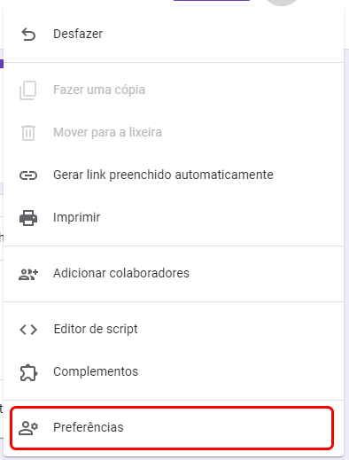
1.3 Deixe as opção iguais à imagem abaixo e clique em Salvar
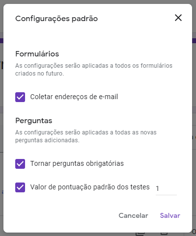
1.4 Clique na engrenagem
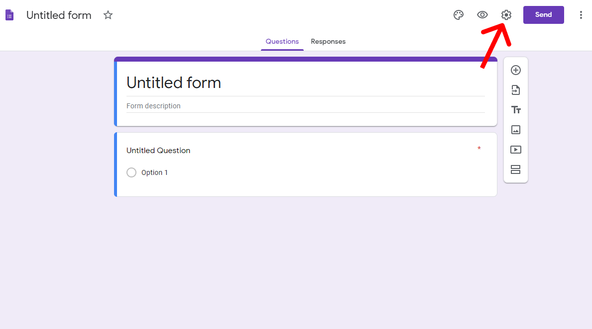
1.5 Deixe as opções iguais à imagem abaixo e clique em Salvar
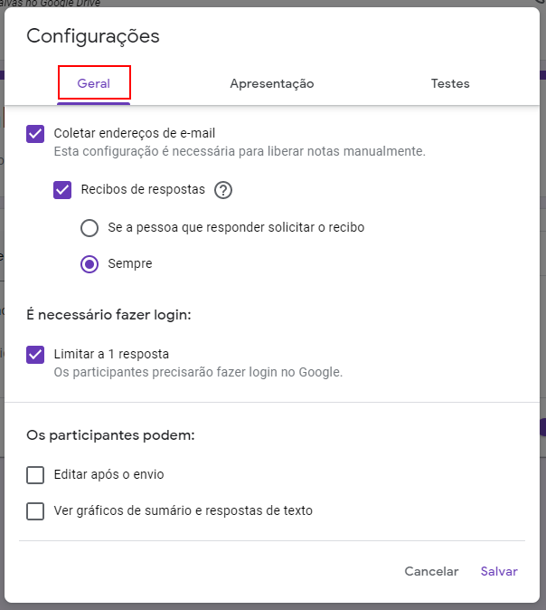
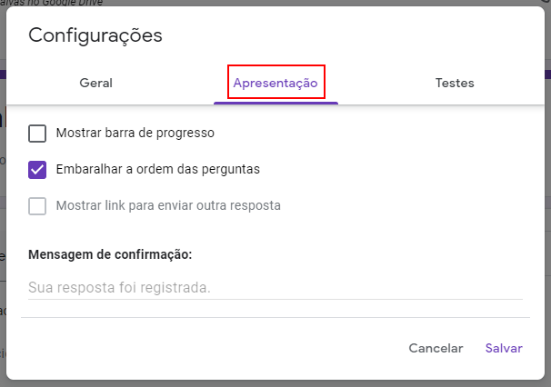
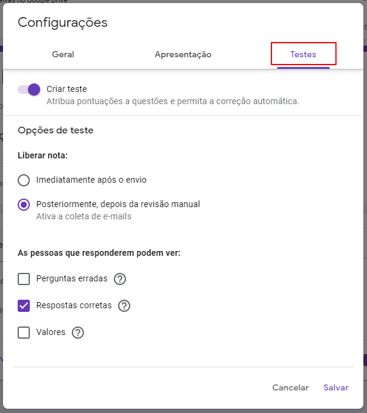
-
2. Dê um nome à prova
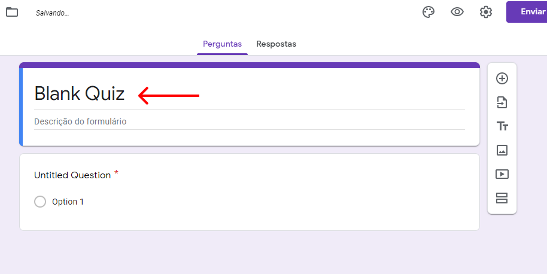
-
3. Criando as perguntas
3.1 Digite o enunciado da questão
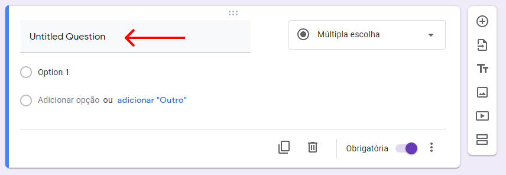
3.1 Digite uma alternativa. Clique em adicionar opção OU aperte a seta para baixo no teclado (↓)
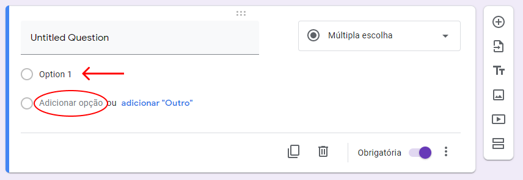
3.2 Clique em chave de resposta
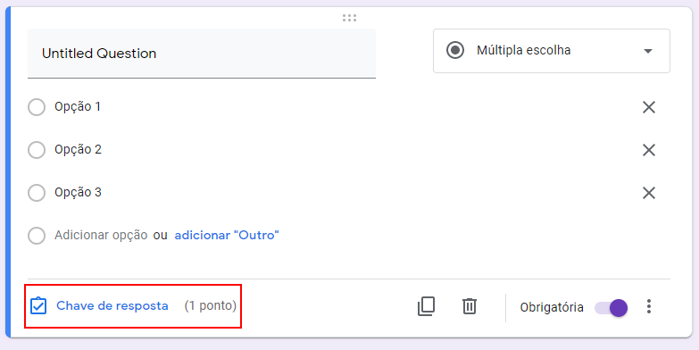
3.3 Selecione a resposta certa e clique em concluído
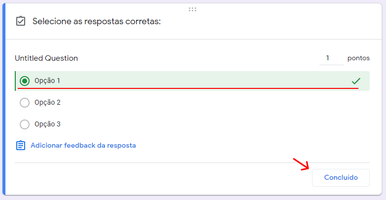
3.4 Clique nos três pontinhos
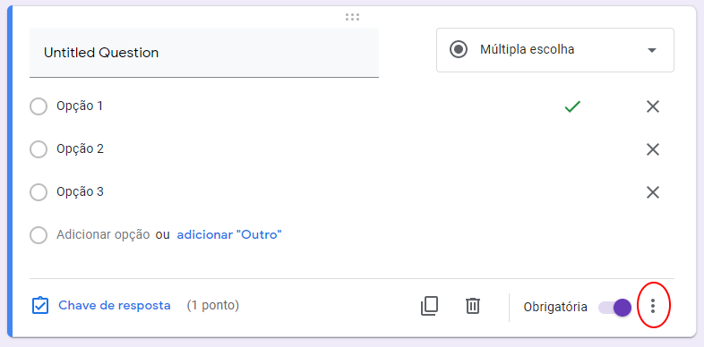
3.5 Clique em Ordenar as opções aleatoriamente
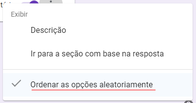
3.6 Clique no + para adicionar outra questão
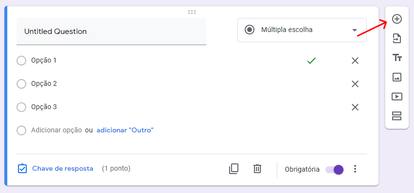
3.7 Repita todo o passo 3 para cada questão